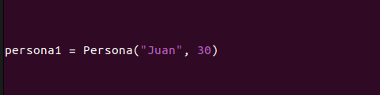
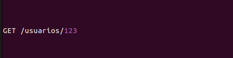
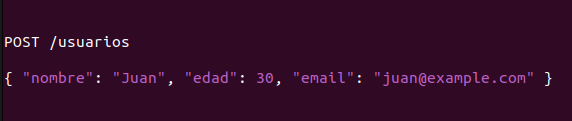
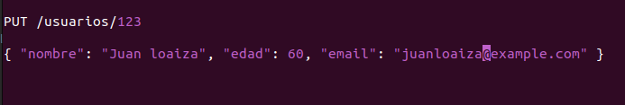
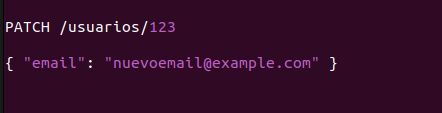
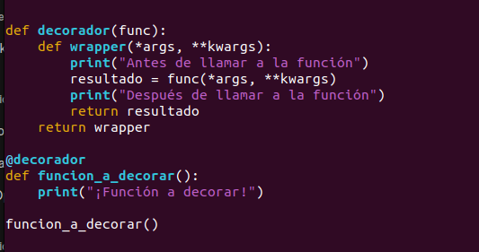

¿Para qué usamos Clases en Python?
Son utilizadas para crear objetos que encapsulan datos y comportamientos relacionados. Algunas de las razones por las cuales utilizamos clases en Python son:
Abstracción:
Las clases permiten modelar objetos del mundo real o conceptos abstractos en el código. Por ejemplo, una clase Persona puede representar a una persona con atributos como nombre, edad, y comportamientos como caminar, hablar, etc.Reutilización de código:
as clases facilitan la reutilización de código a través de la herencia. Puedes crear una nueva clase basada en una clase existente y agregar o modificar su comportamiento según sea necesario. Esto promueve la modularidad y reduce la duplicación de código.Encapsulación:
Las clases permiten encapsular datos y comportamientos relacionados dentro de un objeto. Esto significa que los datos (atributos) y las funciones (métodos) que operan en esos datos están contenidos en la misma unidad, lo que facilita el mantenimiento y la comprensión del código.Polimorfismo:
Las clases en Python admiten polimorfismo, lo que significa que diferentes objetos pueden responder al mismo método de manera diferente. Esto facilita la escritura de código más genérico y flexible.Organización del código:
Utilizar clases ayuda a organizar el código de manera más estructurada y modular. Las clases proporcionan una forma de agrupar datos y funciones relacionadas, lo que mejora la legibilidad y la mantenibilidad del código.
Ejemplo:
crearemos una clase llamada Persona que tendrá atributos como nombre y edad, y métodos para establecer estos atributos y para imprimir información sobre la persona:

Este ejemplo define una clase Persona con un constructor __init__ que inicializa los atributos nombre y edad. También tiene métodos para establecer estos atributos y para imprimir información sobre la persona. Finalmente, se crea una instancia de la clase Persona llamada persona1, se modifican algunos atributos utilizando los métodos definidos, y se imprime la información actualizada sobre la persona.
¿Qué método se ejecuta automáticamente cuando se crea una instancia de una clase?
Cuando se crea una instancia de una clase en Python, el método que se ejecuta automáticamente es el método __init__(). Este método es conocido como el "constructor" de la clase y se utiliza para inicializar los atributos de la instancia recién creada.
Por ejemplo, considera la siguiente clase Persona:

Cuando creas una instancia de esta clase, como en el siguiente ejemplo:
El método __init__() se ejecuta automáticamente, tomando los argumentos "Juan" y 30 que pasaste al crear la instancia, y estableciendo los atributos nombre y edad de la instancia persona1 con esos valores.
En resumen, el método __init__() se ejecuta automáticamente al crear una instancia de una clase en Python y se utiliza para inicializar los atributos de la instancia
¿Cuáles son los tres verbos de API?
Los tres verbos principales utilizados en las API RESTful son:
-
GET (Obtener):
se utiliza para recuperar datos de un recurso específico. Por ejemplo, si tienes una API de usuarios y quieres obtener información sobre un usuario específico con ID 123, realizarías una solicitud GET de la siguiente manera:
Esto solicitará al servidor la información del usuario con ID 123.
-
POST (Enviar):
Se utiliza para enviar datos nuevos al servidor para crear un nuevo recurso. Por ejemplo, si deseas crear un nuevo usuario, podrías enviar los datos del nuevo usuario en una solicitud POST de la siguiente manera:
Esto enviará al servidor la información del nuevo usuario para que sea creado.
-
PUT o PATCH:
Ambos verbos se utilizan para actualizar un recurso existente en el servidor. La diferencia entre PUT y PATCH radica en la forma en que se manejan los datos enviados en la solicitud.
PUT (Actualizar):
Se utiliza para actualizar completamente un recurso existente. Por ejemplo, si deseas actualizar la información de un usuario con ID 123, podrías enviar los datos actualizados en una solicitud PUT de la siguiente manera:
Esto reemplazaría completamente la información del usuario con ID 123 con los datos proporcionados.
PATCH (Actualizar parcialmente):
Se utiliza para actualizar parcialmente un recurso existente, es decir, para enviar solo los datos que se desean actualizar. Por ejemplo, si solo quieres actualizar el correo electrónico del usuario con ID 123, podrías enviar los datos actualizados en una solicitud PATCH de la siguiente manera:
Esto actualizaría solo el correo electrónico del usuario con ID 123, dejando los demás campos sin cambios.
¿Es MongoDB una base de datos SQL o NoSQL?
MongoDB es una base de datos NoSQL. Esto significa que no sigue el modelo relacional de las bases de datos SQL tradicionales. En lugar de eso, MongoDB utiliza un modelo de documentos que almacena datos en forma de documentos JSON (JavaScript Object Notation). Esta flexibilidad en el esquema y la capacidad para almacenar datos no estructurados lo hacen parte del paradigma NoSQL.
¿Qué es una API?
Una API, o Interfaz de Programación de Aplicaciones (Application Programming Interface, en inglés), es un conjunto de reglas, protocolos y herramientas que permiten a diferentes aplicaciones o sistemas comunicarse entre sí. En pocas palabras, una API define cómo interactuar con un sistema informático específico para obtener ciertos servicios o datos.
Las APIs pueden ser utilizadas para una variedad de propósitos, como acceder a funcionalidades específicas de una aplicación, compartir datos entre aplicaciones, integrar sistemas diferentes, o permitir que desarrolladores externos construyan sobre una plataforma existente.
En términos prácticos, una API proporciona un conjunto de reglas y funciones predefinidas que permiten a los desarrolladores de software utilizar los servicios de una aplicación o sistema sin necesidad de entender su complejidad interna. Esto promueve la interoperabilidad y la reutilización de código, lo que a su vez acelera el desarrollo de software y fomenta la creación de ecosistemas digitales más amplios y colaborativos.
¿Qué es Postman?
Postman es una popular plataforma de colaboración para el desarrollo de APIs. Esencialmente, es una herramienta que permite a los desarrolladores probar, documentar y compartir APIs de forma eficiente. Postman proporciona una interfaz de usuario intuitiva que permite a los usuarios enviar solicitudes HTTP a APIs, ver las respuestas, y organizar y automatizar las pruebas de API.
Las características clave de Postman incluyen:
-
Interfaz gráfica de usuario (GUI):
Permite a los usuarios enviar solicitudes HTTP (GET, POST, PUT, DELETE, etc.) de manera intuitiva, sin necesidad de escribir código.
-
Colecciones:
Permite organizar solicitudes relacionadas en colecciones, lo que facilita la gestión y ejecución de pruebas de API.
-
Entornos:
Permite configurar diferentes entornos (por ejemplo, desarrollo, pruebas, producción) con variables de entorno, lo que simplifica la gestión de configuraciones específicas para cada entorno.
-
Automatización:
Permite la creación de scripts de prueba y automatización de pruebas de API, lo que facilita la integración con pipelines de CI/CD (Integración Continua/Entrega Continua).
-
Documentación:
Permite crear documentación interactiva para APIs, lo que facilita la comprensión y el consumo de las mismas por parte de otros desarrolladores.
¿Qué es el polimorfismo?
El polimorfismo es un concepto fundamental en la programación orientada a objetos (POO) que se refiere a la capacidad de objetos de distintas clases de responder al mismo mensaje de manera diferente. Esto significa que un mismo método puede comportarse de manera distinta según el objeto al que se aplique.
Hay dos tipos principales de polimorfismo:
-
Polimorfismo de sobrecarga (overloading):
Esto se refiere a la capacidad de una clase de tener múltiples métodos con el mismo nombre pero diferentes parámetros. En tiempo de compilación, el compilador determina cuál método se debe llamar basándose en la firma del método (nombre y tipo de parámetros).
-
Polimorfismo de sobrescritura (overriding):
Esto ocurre cuando una subclase proporciona una implementación específica de un método que ya ha sido definido en una de sus superclases. Esto permite que el método de la subclase sea llamado en lugar del método de la superclase cuando se invoca en un objeto de esa subclase.
El polimorfismo permite escribir código más genérico y flexible, ya que las clases pueden responder a los mismos mensajes de manera diferente según su implementación específica. Esto facilita la reutilización de código y promueve un diseño de software más modular y extensible.
¿Qué es un método dunder?
Un método dunder (también conocido como método mágico o método especial) en Python es un método que tiene un doble guion bajo (__) al principio y al final de su nombre. Estos métodos tienen un significado especial en Python y son invocados automáticamente en ciertas situaciones por el intérprete de Python.
Los métodos dunder permiten a las clases definir comportamientos específicos para operaciones integradas en Python, como la adición (__add__), la resta (__sub__), la representación de cadenas (__str__), entre otros. Por ejemplo, cuando se utiliza el operador de suma + entre dos objetos de una clase, Python buscará el método __add__ definido en la clase para realizar la operación de adición.
Algunos ejemplos comunes de métodos dunder son:
-
__init__:
Este método es llamado cuando se crea una nueva instancia de la clase y se utiliza para inicializar los atributos del objeto.
-
__str__:
Este método se llama cuando se convierte el objeto a una cadena mediante la función str() o cuando se utiliza la función print(). Define cómo se representa el objeto como una cadena.
-
__repr__:
Este método se llama cuando se llama a la función repr() y define cómo se representa el objeto en su forma de representación de cadena.
-
__len__:
Este método se llama cuando se utiliza la función len() para obtener la longitud de un objeto.
¿Qué es un decorador de python?
Un decorador en Python es una función especial que toma otra función como argumento y retorna una nueva función modificada, o reemplaza completamente la función original con una nueva implementación. Los decoradores permiten modificar o extender el comportamiento de una función sin modificar su código interno.
Los decoradores se utilizan comúnmente para agregar funcionalidades a funciones existentes, como registrar información de registro, validar entradas, medir el tiempo de ejecución, entre otras cosas. Esto hace que el código sea más modular, reutilizable y fácil de mantener.
En Python, los decoradores se implementan utilizando la sintaxis @decorador justo antes de la definición de una función. Por ejemplo:
En este ejemplo, decorador es un decorador que toma una función como argumento y retorna una función wrapper que envuelve la función original. Cuando se llama a funcion_a_decorar(), en realidad se llama a wrapper, que imprime un mensaje antes y después de llamar a la función original.
Los decoradores son una característica poderosa y flexible de Python que se utiliza ampliamente en muchas bibliotecas y marcos de trabajo para extender el comportamiento de las funciones y métodos existentes.